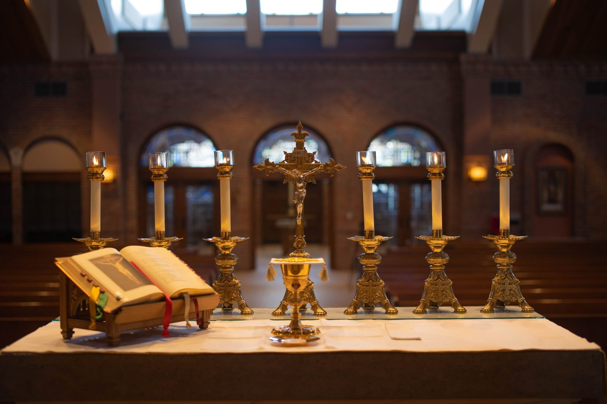
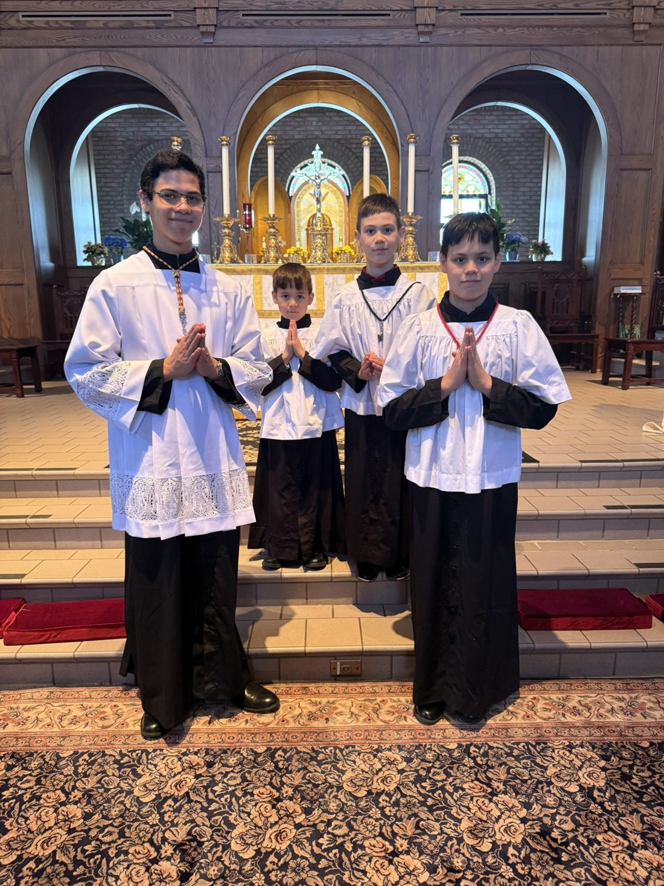

Open House
Open House & Information Evening
Meet our family of learners, see our curriculum, and ask questions about homeschooling with the Academy.


A Catholic Homeschool · Kindergarten through Twelfth Grade
Holiness in the ordinary day.
Our MissionWelcome
St. Josemaría Escrivá Academy is a Catholic homeschool serving children from kindergarten through twelfth grade. Here the kitchen table is a classroom, the family is a small domestic church, and the daily work of learning is offered to God.
Prayer, the sacraments and the teaching of the Church shape the day and every subject in it.
Reading, writing, mathematics, science and history taught with care, from first letters to college preparation.
Diligence in small things, a lesson finished or a chore done right, becomes a path to holiness.

Our Students
Our students learn in the home and serve at the altar. Faith is not a subject we add to the day. It is the reason for the day.
“Sanctify your work, sanctify yourself in your work, sanctify others through your work.”St. Josemaría Escrivá

Our Patron
St. Josemaría taught that holiness is not only for priests and religious. It is for everyone, in the middle of ordinary life. That is the heart of homeschooling, and it is why he is our patron.
Read more about the Academy →Gatherings
Open House
Meet our family of learners, see our curriculum, and ask questions about homeschooling with the Academy.
8Dec
Holy Day
Mass together, followed by the Consecration to Mary and a shared meal.
Concert
An evening of carols, recitation and music by our students, followed by refreshments.